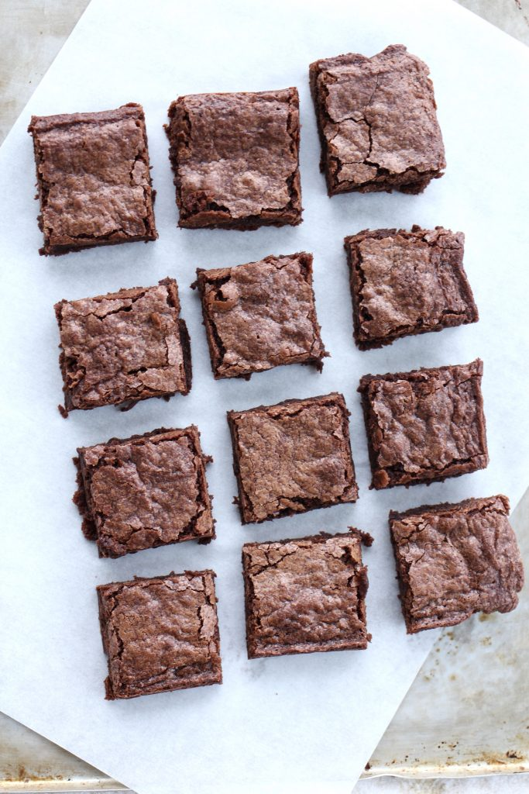

Aum's Malt Brownies

Description
These are my special chewy brownies that contain a special ingredient: malted milk powder. My boyfriend loves these brownies.
Ingredients
- 1/3 cup Dutch processed cocoa powder
- 1/2 cup plus 2 tbps boiling water
- 2 oz. unsweetened chocolate, preferably Valrhona
- 4 tbps (1/2 stick) unsalted butter, melted
- 1/2 cup plus 2 tbps vegetable oil
- 2 large eggs
- 2 large egg yolks
- 2 tsps vanilla
- 2 1/2 cups sugar
- 1 3/4 cups all purpose flour
- 3/4 tsp salt
Directions
- Line a 9x13 pan with parchment paper, leaving a one-inch overhang.
- Mix flour and salt in a bowl. Set aside.
- Whisk cocoa and boiling water together in a large bowl until smooth. Add unsweetened chocolate and whisk until chocolate is melted. Whisk in melted butter and oil. Mixture may look curdled at this point. Add eggs, egg yolks, and vanilla. Continue to whisk until smooth. Whisk in sugar until fully incorporated. Using rubber spatula, fold in flour and salt, taking care not to over mix.
- Preheat oven to 350 degrees Fahrenheit.
- Scrape batter into prepared pan. Tap pan against kitchen counter a few times to release air bubbles.
- Bake until toothpick inserted in center comes out with a few moist crumbs attached, about 30-40 minutes. Do not overcook. Transfer pan to wire rack and let cool completeley, about 1 to 1 1/2 hours.
Adapted from abountifulkitchen.
Return to Top.
Return to Homepage.